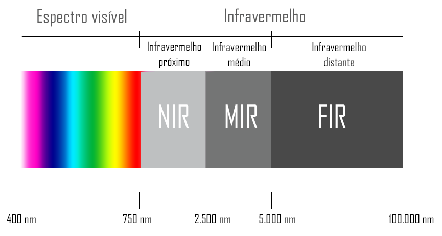
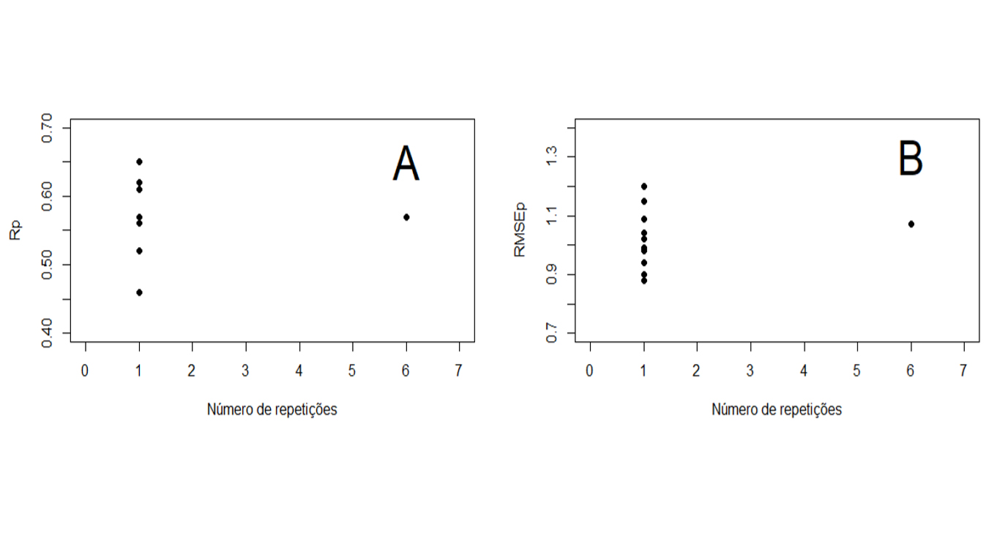

Caio Marchiorato de Gouveia
I'm a graduate student in Agronomy passionate about plant breeding.
Contact Me
Studies
Spectral variability in sugarcane phenotyping by near infrared spectroscopy
Due to the national economic development, the production of sugarcane has a fundamental role with constant growth in production over the years. Due to the extensive time required to obtain a promising material, it is extremely important to develop and use appropriate statistical, phytotechnical and molecular techniques to optimize the selection process, enabling the development of more productive varieties with more desirable characteristics for meet the interest of the sugarcane industry. The use of platforms such as the NIR (Near-infrared) spectrometer makes it possible to advance over the bottleneck of plant genetic improvement: high-yield phenotyping.

The use of NIR makes it possible to evaluate large numbers of individuals, for many characters, during all stages of development of new cultivars, in a non-destructive way, with high accuracy and resulting in the absence of chemical waste analysis.

The objective of this work is to evaluate the variability in spectral readings in relation to the number of repetitions to obtain each spectrum, and its impact on predictive models.

The results were possible to select the best tests of use, with higher correlation coefficient, a combination of smoothing, multiplicative spreading correction and centering on the mean with latent variables between 6 and 10. However, combinations between smoothing and mean on the mean , and smoothing, 1st derivative, multiplicative spreading correction and centering of the mean, also higher mean values.
It was possible to observe a dispersion of the data for the due treatments in relation to the number of repetitions per sample, with a variation of the correlation coefficient between 0.46 and 0.65, thus making it possible to study these sources of variations in future works with the objective of reducing them to the point of increasing the accuracy of the prediction models. As for the root of the mean prediction square error, variations between 0.9 to 1.15 were observed. Both of the partial mean squares prediction model (PLS).
